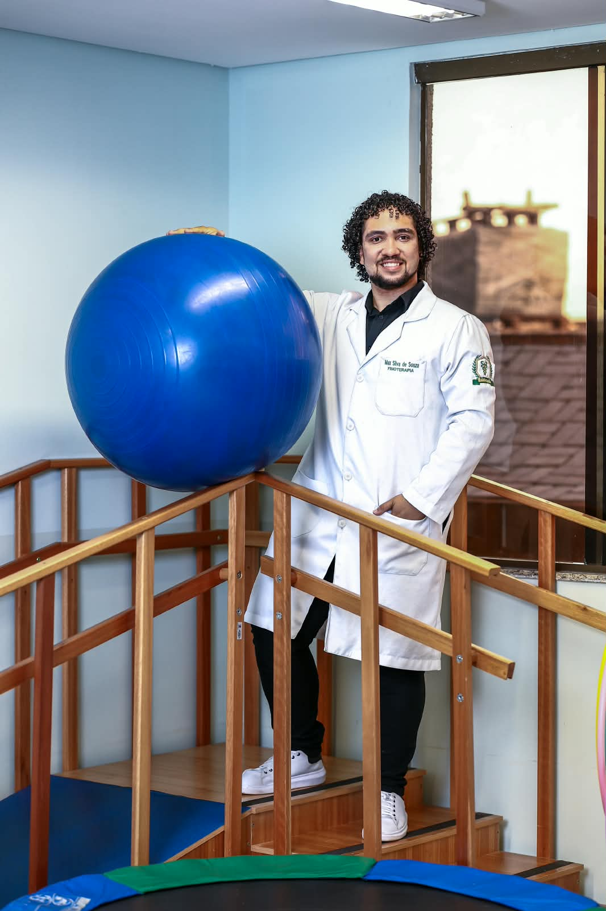

Tratamentos fisioterapêuticos personalizados com foco em diagnosticar a causa do seu desconforto, devolver sua força funcional e garantir a sua qualidade de vida.
Fisioterapeuta Especialista

O Dr. Max Silva atua na área da fisioterapia com o objetivo de entregar resultados concretos no alívio de dores ortopédicas, prevenção de lesões e reabilitação pós-operatória.
Seu método combina técnicas manuais avançadas, cinesioterapia e exercícios terapêuticos individualizados. Cada sessão é desenhada para entender as particularidades da sua rotina, garantindo uma recuperação segura e acelerada.
Identificação precisa do foco da dor.
Protocolos sob medida para cada paciente.
Tratamentos completos focados no alívio da dor e na reabilitação muscular e articular.
Tratamento de dores na coluna (hérnias, lombalgias), tendinites, bursites, dores articulares e alterações posturais.
Recuperação acelerada para praticantes de esportes e atletas, tratando entorses, estiramentos e prevenindo lesões.
Acompanhamento fisioterapêutico pós-cirúrgico para recuperar a amplitude de movimento, força e mobilidade com segurança.
Técnicas manuais diretas no tecido muscular e articular para liberação miofascial, alívio de nós e tensões corporais.
Correção e fortalecimento da musculatura estabilizadora para evitar desvios e dores decorrentes do trabalho e má postura.
Estratégias contínuas de movimento consciente para evitar que desconfortos pontuais se tornem dores crônicas.
Agende uma avaliação inicial com o Dr. Max Silva e descubra o plano de tratamento ideal para o seu caso.
📞 Contato direto: (62) 9287-5310
Agendar Via WhatsApp (+55 62 9287-5310)"Cheguei ao consultório do Dr. Max com uma dor forte na lombar que me impedia de trabalhar. Em poucas sessões de fisioterapia especializada já recuperei meus movimentos sem dor!"
Carlos Eduardo Paciente de Fisioterapia Ortopédica"Atendimento excelente! O Dr. Max é extremamente atencioso, explica cada passo do tratamento e acompanha a evolução bem de perto."
Mariana Souza Reabilitação Pós-Operatória"Excelente profissional de reabilitação esportiva! Voltei a correr e treinar na academia sem sentir as dores no joelho que me incomodavam há meses."
Lucas Mendes Atleta AmadorÉ realizada uma avaliação física completa para entender o histórico da dor, testes de mobilidade e a elaboração do plano de tratamento personalizado.
O número de sessões varia conforme a gravidade da lesão e a resposta individual do paciente. O Dr. Max reavalia periodicamente a evolução.
Não é obrigatório. O fisioterapeuta é um profissional de primeiro contato habilitado para diagnosticar funcionalmente e iniciar o tratamento.